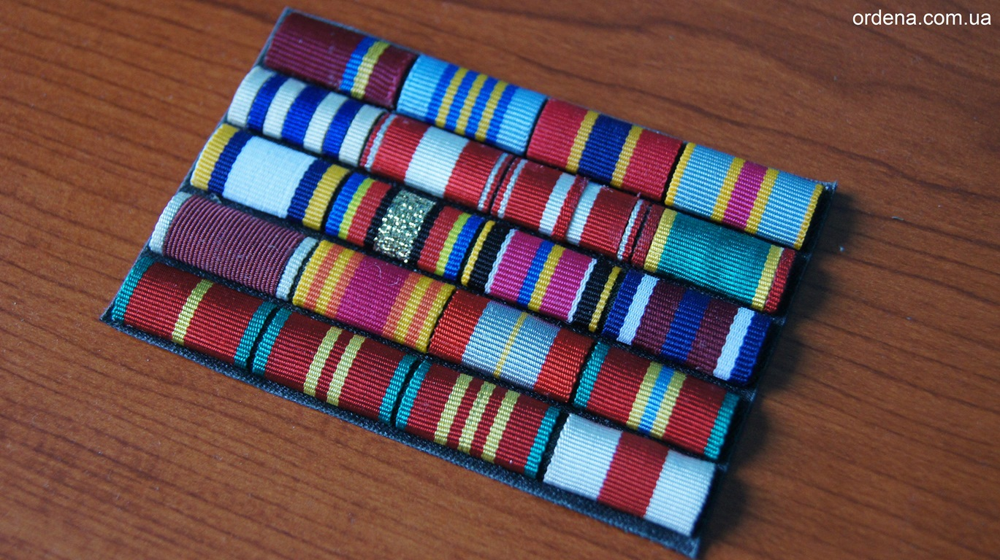
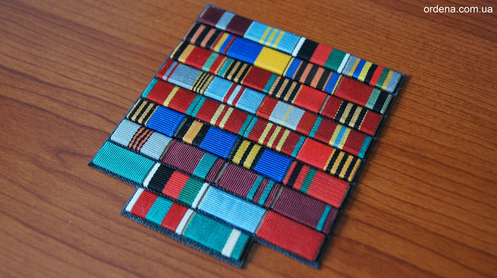

Орденська планка - пристосування для носіння орденських стрічок замість отриманих нагород.
Являє собою обтягнуту орденської стрічкою прямокутну підкладку. Виготовляється на гнучкій основі, яка в свою чергу клеїться на тканинну підкладку. Колір тканинної підкладки може бути підібраний під колір форми (синя, зелена, сіра, чорна ...).
Планки кріпляться до форми пришивши планку виконану на тканинній основі по контуру планки до форми. Переваги такого кріплення полягають у тому, що планки прилягають до форми по всьому контуру, що є більш практичнішим у використанні.
Також є можливість прикріпити планки до форми гвоздиками (євро-кріплення батерфляй).
Пришивна – є уставним варіантом для кріплення планки на кітель.
В якості місця носіння орденських планок визначена ліва сторона грудей.
На загальній планці стрічки розташовуються в певному порядку, зафіксованому у відповідних документах, але загальний принцип такий: чим вище статус нагороди, тим вище вона і в списку розташування (державні, відомчі, громадські). В України такий порядок визначено Указом Президента України № 365/2012 від 30.05.2012 р. згідно якого спочатку розміщуються Державні нагороди України, далі – Державні нагороди інших держав, відомчі нагороди та інші відзнаки.
Кожній нагороді відповідає своя стрічка. Коли в складі нагороди присутній медальна колодка, то використана на ній стрічка також застосовується для оформлення відповідної орденської планки.
Стрічки деяких нагород, окремо від них не носяться. (Тобто не для кожної нагороди передбачена своя планка!)
Виготовлення орденських планок проводиться за індивідуальним замовленням.
В Україні, згідно вищевказаного Указу Президента України для виготовлення орденських планок використовується стрічка 28 мм і 24мм.
Ми виготовляємо орденські планки українського зразка (12х24 мм), радянського зразка(12х24 мм) та інших країн в тому числі до нагород ООН шириною 35 мм.
Для виготовлення орденських планок використовується:
- оригінальна та високоякісна натуральна стрічка;
- оригінальна мундирна тканина (на яку клеються орденські планки);
- професійні клейові основи, що не бояться впливу зовнішніх факторів і дозволять Вам бути впевненими у надійності орденських планок.
Також ми завжди володіємо інформацією про прийняті нормативно-правові акти стосовно офіційних нагород, що дозволяє нам правильно розташувати ваші нагороди на одязі та орденській планці.

Як з'явилися орденські планки?
Початок історії. У царській Росії орденські планки видали б тільки високим чинам!Отже, до революції нагородна система в Росії відрізняється яскраво вираженим класовим характером. Звичайно, кілька несуттєвих нагород для невисоких військових і цивільних чинів були ведені. Але головна мета системи нагород - зробити сильніше правлячий клас. Тому заохочували в основному тих, у кому бачили «опору престолу».
Орденські планки: формування нагородної системи.
У 1943 році стверджують нові правила носіння радянських медалей і орденів. Ордена овальної або круглої форми, а також медалі почали прикріплювати до одягу тих, кого нагородили, за допомогою особливої колодки. Її обтягували стрічкою медалі або ж орденської стрічкою. Завдяки цьому нововведенню нагороджені змогли надягати замість медалей і орденів орденські планки, на яких зміцнювали встановлені для цих нагород стрічки.
